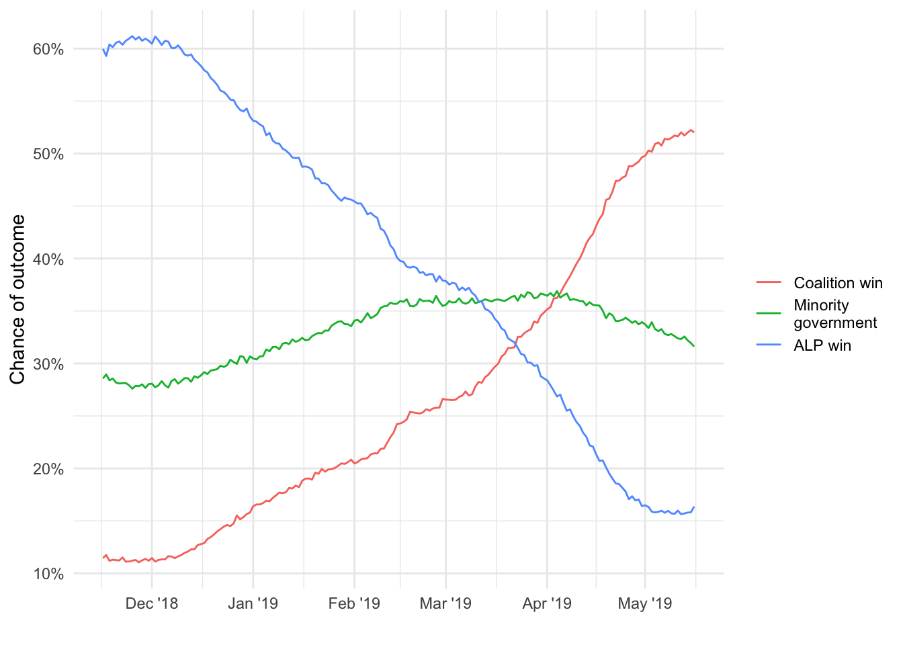
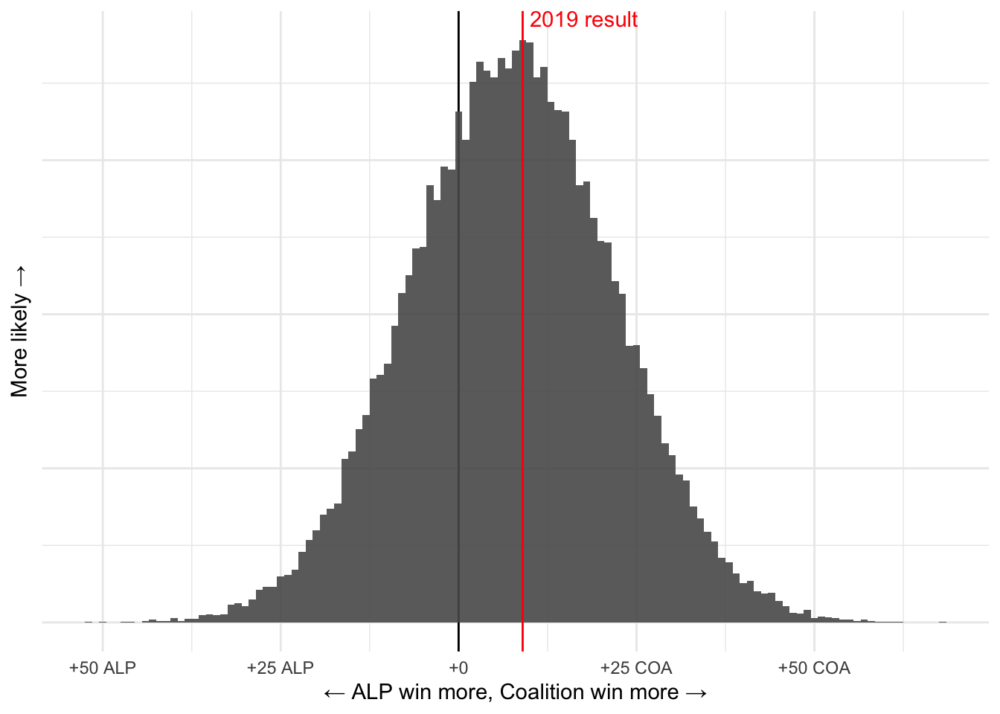
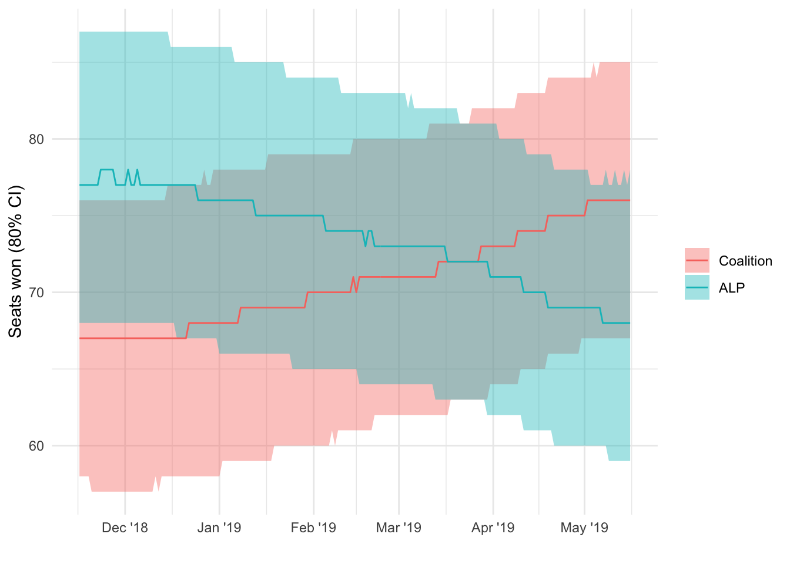
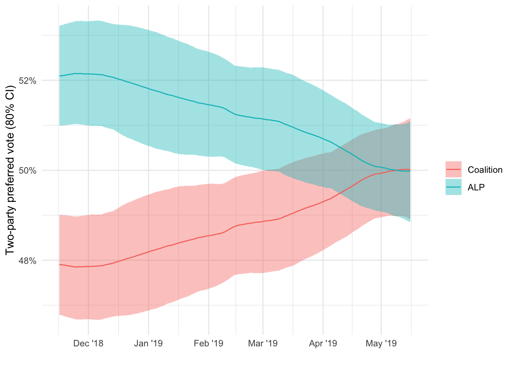

Code
library(tidyverse)
library(rstan)
library(scales)
library(glue)
library(knitr)
theme_set(theme_minimal())
options(dplyr.summarise.inform = FALSE)This document demonstrates the Buckley’s & None Australian election forecasting model. It includes the stan code that defines the model and uses data in the lead up to 2019 election to demonstrate how it would have performed in that election.
This model is built by Martin Burgess and is licensed under a Creative Commons Attribution-ShareAlike 4.0 International License.
The code requires tidyverse and rstan to be installed.
library(tidyverse)
library(rstan)
library(scales)
library(glue)
library(knitr)
theme_set(theme_minimal())
options(dplyr.summarise.inform = FALSE)Read in the data and package it up so that it can be input into the stan model.
polls <- read_csv("data/polls2019.csv") |>
mutate(firm_index = as.numeric(as.factor(firm_coarse)))
all_elections <- read_csv("data/election_results2019.csv")
polls_elections <- all_elections |>
filter(!is.na(day_index))
crossbench <- read_csv("data/crossbench2019.csv")
model_input <- list(
# timeseries length
n_days = max(polls$day_index),
# priors,
tpp_mu_prior_mu = mean(all_elections$tpp_alp),
tpp_mu_prior_scale = sd(all_elections$tpp_alp),
tpp_sigma_prior_mu = 0.0025,
tpp_sigma_prior_scale = 0.001,
tpp_coef_prior_scale = 0.05,
df_prior_alpha = 32/3,
df_prior_beta = 8/3,
# election data for polling
polls_n_elections = nrow(polls_elections),
polls_election_days = as.array(polls_elections$day_index),
polls_election_tpp_alp = as.array(polls_elections$tpp_alp),
# polling data
polls_n = nrow(polls),
polls_firms_n = length(unique(polls$firm_index)),
polls_firm = polls$firm_index,
polls_tpp_alp = polls$tpp_alp,
polls_standard_error = polls$tpp_alp_se,
polls_day = polls$day_index,
polls_se_inflator = 2,
# election data for tpp2seats
tpp2seats_n_elections = nrow(all_elections),
tpp2seats_alpha_prior_mu = 0,
tpp2seats_alpha_prior_scale = 3,
tpp2seats_beta_prior_mu = 0,
tpp2seats_beta_prior_scale = 5,
tpp2seats_election_major_seats = all_elections$seats_alp + all_elections$seats_lnc,
tpp2seats_election_alp_seats = all_elections$seats_alp,
tpp2seats_election_tpp_alp = all_elections$tpp_alp,
# data for crossbench
crossbench_n_elections = nrow(crossbench),
crossbench_retain_shots = crossbench$crossbench_running,
crossbench_retained = crossbench$crossbench_retain,
crossbench_gain_shots = crossbench$gain_opportunities,
crossbench_gained = crossbench$crossbench_gain
)Specify the stan code that defines the model. This can be stored in a separate file but it has been included here so that everything is in one document.
The underlying two-party preferred voting intention model was inspired by a similar model for the 2019 election built by Peter Ellis. Key changes include incorporating a hyperparameter for the degrees of freedom used between days in the bayesian state space model.
stan_model <- "
data {
// timeseries length
int<lower = 1> n_days;
// priors
real<lower = 0, upper = 1> tpp_mu_prior_mu;
real<lower = 0> tpp_mu_prior_scale;
real<lower = 0> tpp_sigma_prior_mu;
real<lower = 0> tpp_sigma_prior_scale;
real<lower = 0> tpp_coef_prior_scale;
real<lower = 0> df_prior_alpha;
real<lower = 0> df_prior_beta;
// election data for polling
int polls_n_elections;
int polls_election_days[polls_n_elections]; // days on which elections occur
real polls_election_tpp_alp[polls_n_elections]; // historical election results
// polling data
// total number of polls
int<lower=1> polls_n;
// number of firms
int<lower=1> polls_firms_n;
// pollster index
int<lower=1,upper=polls_firms_n> polls_firm[polls_n];
// polling data
real<lower=0,upper=1> polls_tpp_alp[polls_n];
real<lower=0> polls_standard_error[polls_n];
int<lower=1> polls_day[polls_n];
//int<lower=1, upper=2> poll_close_to_next[polls_n];
// polling standard error inflator
real<lower=1> polls_se_inflator;
// election data for tpp2seats
int<lower=1> tpp2seats_n_elections;
real tpp2seats_alpha_prior_mu;
real<lower = 0> tpp2seats_alpha_prior_scale;
real tpp2seats_beta_prior_mu;
real<lower = 0> tpp2seats_beta_prior_scale;
int tpp2seats_election_major_seats[tpp2seats_n_elections];
int tpp2seats_election_alp_seats[tpp2seats_n_elections];
vector<lower=0, upper=1>[tpp2seats_n_elections] tpp2seats_election_tpp_alp;
// data for crossbench model
int<lower=1> crossbench_n_elections;
int<lower=0> crossbench_retain_shots[crossbench_n_elections];
int crossbench_retained [crossbench_n_elections];
int<lower=0> crossbench_gain_shots[crossbench_n_elections];
int crossbench_gained [crossbench_n_elections];
}
parameters {
// tpp_margin estimate
vector<lower=0, upper=1>[n_days] tpp_mu;
// tpp_margin sigma
real<lower=0> tpp_sigma;
// degrees of freedom between days
real<lower=1, upper=7> student_t_df;
// house effect
real<lower=-1, upper=1> house_effect[polls_firms_n];
// close to next effect
real<lower=-1, upper=1> polling_bias;
// tpp to seat
real alpha;
real beta;
// crossbench
real<lower=0, upper=1> crossbench_p_retain;
real<lower=0, upper=1> crossbench_p_gain;
}
transformed parameters {
// linear predictor
vector[tpp2seats_n_elections] tpp2seats_y_hat;
tpp2seats_y_hat = alpha + tpp2seats_election_tpp_alp * beta;
}
model {
// priors # make parameters for these
tpp_mu[1] ~ normal(tpp_mu_prior_mu, tpp_mu_prior_scale); // starting state space
tpp_sigma ~ normal(tpp_sigma_prior_mu, tpp_sigma_prior_scale); // prior for innovation sd.
house_effect ~ normal(0, tpp_coef_prior_scale); // ie a fairly loose prior for house effects (on scale of [0,1])
polling_bias ~ normal(0, tpp_coef_prior_scale);
student_t_df ~ gamma(df_prior_alpha, df_prior_beta);
// state model
tpp_mu[2:n_days] ~ student_t(student_t_df, tpp_mu[1:(n_days - 1)], tpp_sigma);
// historical election results
for(election_i in 1:polls_n_elections){
polls_election_tpp_alp[election_i] ~ normal(tpp_mu[polls_election_days[election_i]], 0.0001); // we know tpp_mu very accurately on election day
}
//polls
for(poll_i in 1:polls_n){
polls_tpp_alp[poll_i] ~ normal(tpp_mu[polls_day[poll_i]] + house_effect[polls_firm[poll_i]] + polling_bias, polls_standard_error[poll_i] * polls_se_inflator);
}
// //tpp2seats
alpha ~ normal(tpp2seats_alpha_prior_mu, tpp2seats_alpha_prior_scale);
beta ~ normal(tpp2seats_beta_prior_mu, tpp2seats_beta_prior_scale);
tpp2seats_election_alp_seats ~ binomial_logit(tpp2seats_election_major_seats, tpp2seats_y_hat);
// crossbench
crossbench_p_retain ~ beta(5,2);
crossbench_retained ~ binomial(crossbench_retain_shots, crossbench_p_retain);
crossbench_p_gain ~ beta(1,5);
crossbench_gained ~ binomial(crossbench_gain_shots, crossbench_p_gain);
}
"Run the model. If you are running this yourself you may want to change the number of chains and cores and the number of iterations (per chain). I use 8 cores so this creates 80,000 samples and we use the second half of them.
model_output <- stan(model_code = stan_model,
data = model_input,
chains = parallel::detectCores() - 2,
cores = parallel::detectCores() - 2,
control = list(max_treedepth = 11),
iter = 10000,
sample_file = "output/forecast_samples.csv",
verbose = FALSE)
rm(model_output)Load samples generated by stan, discarding the first half of samples as “burn in”.
# load samples ------------------------------------------------------------
samples <- tibble()
sample_files <- list.files(path = "output/",
pattern = "forecast_samples_",
full.names = TRUE)
for(file in sample_files){
temp <- read_csv(file,
skip = 25) |>
filter(!is.na(accept_stat__)) |>
slice(-1) |>
slice_tail(prop = 0.5) |>
select(-lp__)
samples <- bind_rows(samples,
temp)
}
# generated values --------------------------------------------------------
samples_no_ts <- samples |>
filter(!is.na(crossbench_p_retain)) |>
mutate(crossbench_retain = rbinom(n(), 7, crossbench_p_retain),
crossbench_gain = rbinom(n(), 151-7, crossbench_p_gain),
crossbench_total = crossbench_retain + crossbench_gain) |>
mutate(majors_seats = 151 - crossbench_total)
ts_start <- as.Date("2004-10-09") - 90
last_year_cols <- tibble(col_name = names(samples)) |>
filter(str_starts(col_name, "tpp_mu")) |>
separate(col = col_name,
into = c(NA, "day_index"),
sep = "\\.",
remove = FALSE) |>
mutate(day_index = as.numeric(day_index),
date = as.Date(day_index, origin = ts_start-1)) |>
filter(date > max(date) - 365)
samples_ts <- samples_no_ts |>
select(all_of(last_year_cols$col_name),
starts_with("house_effect"),
polling_bias,
alpha,
beta,
majors_seats,
crossbench_total) |>
pivot_longer(cols = starts_with("tpp_mu"),
names_to = "day",
values_to = "tpp_alp") |>
left_join(last_year_cols,
by = c("day" = "col_name")) |>
mutate(p_alp_win_seat = plogis(alpha + beta*tpp_alp)) |>
mutate(alp_seats = rbinom(n(), majors_seats, p_alp_win_seat),
lnc_seats = as.integer(majors_seats - alp_seats),
seat_margin = lnc_seats - alp_seats) |>
mutate(tpp_lnc = 1 - tpp_alp,
tpp_margin = tpp_lnc - tpp_alp)
samples_election_date <- samples_ts |>
filter(date == max(date))
rm(temp, samples, samples_no_ts)Calculate proportion of samples for the three primary outcomes: ALP win, Liberal/National Coalition (LNC) win or minority government.
samples_election_date %>%
count(alp_seats, lnc_seats) |>
mutate(prop = n / sum(n)) |>
mutate(outcome = case_when(alp_seats >= 76 ~ "ALP win",
lnc_seats >= 76 ~ "Coalition win",
TRUE ~ "Minority government")) |>
group_by(outcome) |>
summarise(chance = percent(sum(prop), accuracy = 0.1)) |>
kable()| outcome | chance |
|---|---|
| ALP win | 16.4% |
| Coalition win | 52.0% |
| Minority government | 31.6% |
chances_ts <- samples_ts |>
filter(date > (max(date) - floor(365/2))) |> # last 6 months of data
group_by(date) |>
summarise(`ALP win` = mean(alp_seats >=76),
`Coalition win` = mean(lnc_seats >=76),
`Minority\ngovernment` = mean(lnc_seats <76 & alp_seats < 76)) |>
ungroup() |>
pivot_longer(cols = -c(date),
names_to = "outcome",
values_to = "chance") |>
select(date, outcome, chance) |>
mutate(outcome = fct_reorder2(outcome, date, chance))
chances_ts |>
ggplot(aes(x = date,
y = chance,
colour = outcome)) +
geom_line() +
scale_y_continuous(labels = percent_format(accuracy = 1)) +
scale_x_date(date_labels = "%b '%y") +
labs(x = "",
y = "Chance of outcome",
colour = "")
x_lab <- function(x) {
l <- tibble(x = x) |>
mutate(p = case_when(x > 0 ~ " COA",
x < 0 ~ " ALP",
TRUE ~ "")) |>
mutate(lab = glue("+{abs(x)}{p}")) |>
pull(lab)
return(l)
}
samples_election_date |>
ggplot(aes(x = seat_margin)) +
geom_vline(xintercept = 0) +
geom_histogram(binwidth = 1,
alpha = 0.9) +
geom_vline(xintercept = 9,
colour = "red") +
labs(y = "More likely →",
x = "← ALP win more, Coalition win more →") +
scale_x_continuous(labels = x_lab) +
theme(axis.text.y = element_blank()) +
annotate("text",
x = 9+1,
y = Inf,
label = "2019 result",
colour = "red",
hjust = 0,
vjust = 1)
samples_election_date |>
count(alp_seats, lnc_seats, crossbench_total) |>
mutate(prop = n/sum(n)) |>
ggplot(aes(x = alp_seats,
y = lnc_seats,
fill = prop)) +
geom_tile() +
geom_point(x = 68,
y = 76,
shape = 4,
size = 2,
alpha = 0.5,
colour = "red") +
scale_fill_continuous(labels = percent_format(accuracy = 0.1)) +
labs(y = "Coalition seats",
x = "ALP seats",
fill = "Chance") +
annotate("text",
x = 72,
y = 80,
colour = "red",
label = "2019 result",
hjust = 0,
vjust = 0)seats_ts <- samples_ts |>
filter(date > max(date) - as.integer(365/2)) |>
pivot_longer(cols = c(alp_seats,
lnc_seats),
names_to = "party",
values_to = "seats") |>
select(date, party, seats) |>
mutate(colour = case_when(party == "alp_seats" ~ "ALP",
party == "lnc_seats" ~ "Coalition")) |>
group_by(date, party, colour) |>
summarise(seats_50 = quantile(seats, 0.5),
seats_10 = quantile(seats, 0.1),
seats_90 = quantile(seats, 0.9)) |>
mutate(across(starts_with("seats_"), ~round(.x))) |>
ungroup() |>
mutate(colour = fct_reorder2(colour, date, seats_50))
seats_ts |>
ggplot(aes(x = date,
y = seats_50,
ymin = seats_10,
ymax = seats_90,
colour = colour,
fill = colour)) +
geom_ribbon(alpha = 0.4,
colour = NA) +
geom_line() +
scale_x_date(date_labels = "%b '%y") +
labs(x = "",
y = "Seats won (80% CI)",
fill = "",
colour = "")
x_lab <- function(x) {
l <- tibble(x = x) |>
mutate(p = case_when(x > 0 ~ " COA",
x < 0 ~ " ALP",
TRUE ~ "")) |>
mutate(lab = glue("+{percent(abs(x), accuracy = 0.1)}{p}")) |>
pull(lab)
return(l)
}
samples_election_date |>
ggplot(aes(x = tpp_margin)) +
geom_vline(xintercept = 0) +
geom_density(alpha = 0.9,
fill = "grey",
colour = NA) +
geom_vline(xintercept = 0.0306,
colour = "red") +
scale_x_continuous(labels = x_lab,
limits = c(-0.09, 0.09)) +
theme(axis.text.y = element_blank()) +
labs(y = "More likely →",
x = "← ALP TPP higher, Coalition TPP higher →") +
annotate("text",
x = 0.0306 + 0.005,
y = Inf,
label = "2019 result",
colour = "red",
hjust = 0,
vjust = 1)Warning: Removed 2 rows containing non-finite values (stat_density).
tpp_ts <- samples_ts |>
filter(date > max(date) - as.integer(365/2)) |>
pivot_longer(cols = c(tpp_alp,
tpp_lnc),
names_to = "party",
values_to = "tpp") |>
select(date, party, tpp) |>
mutate(colour = case_when(party == "tpp_alp" ~ "ALP",
party == "tpp_lnc" ~ "Coalition")) |>
group_by(date, party, colour) |>
summarise(tpp_50 = quantile(tpp, 0.5),
tpp_10 = quantile(tpp, 0.1),
tpp_90 = quantile(tpp, 0.9)) |>
ungroup() |>
mutate(colour = fct_reorder2(colour, date, tpp_50))
tpp_ts |>
ggplot(aes(x = date,
y = tpp_50,
ymin = tpp_10,
ymax = tpp_90,
colour = colour,
fill = colour)) +
geom_ribbon(alpha = 0.4,
colour = NA) +
geom_line() +
scale_y_continuous(labels = percent_format(accuracy = 1)) +
scale_x_date(date_labels = "%b '%y") +
labs(x = "",
y = "Two-party preferred vote (80% CI)",
fill = "",
colour = "")